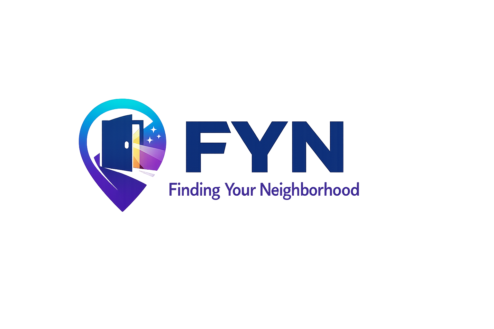

🚪
Describe the space
Say who the door is for, what the community cares about, and what someone should understand when they arrive.
FYN helps people build small static websites that make specific communities, resources, and working spaces easier to find — without tracking, profiles, feeds, or algorithms.

Most discovery tools optimize for reach. FYN optimizes for recognition: the moment someone arrives and immediately understands that they are in the right place.
Say who the door is for, what the community cares about, and what someone should understand when they arrive.
Link to the real places connection already happens: a forum, Discord, organization, newsletter, working group, or resource hub.
No accounts. No tracking. No behavioral profiles. No engagement loops. The door welcomes people without watching them.
Most platforms optimize for reach. FYN optimizes for recognition.
FYN generates a simple static site from creator-provided language and links. The creator decides what the door says and where it points.
Name the space, describe who it is for, and add the links people should visit next.
The builder creates a small static website: fast, portable, and hostable on GitHub Pages.
Share one clear address. Visitors read, recognize the fit, and choose where to go next.
If the generated output contains tracking scripts or hidden data collection, the build stops. That is not a setting. It is how FYN works.
These examples show how FYN can make very specific spaces findable without turning them into a social platform.
A door for people working on or following Amur tiger conservation across AZA institutions.
A door for small libraries looking for peers, grants, volunteers, shared resources, and practical support.
FYN is for communities, projects, and subject areas that need a clear place to land without giving up privacy, control, or meaning.
Ask about FYN →